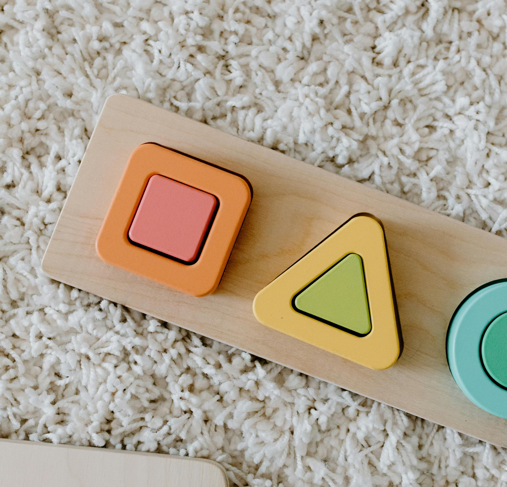

Como é o Mundo das Plantas e Animais?
Vamos aprender sobre as plantas e os animais que fazem parte do nosso dia a dia. Vamos descobrir como eles são, onde vivem e como se relacionam com o ambiente ao redor.
O que são Imagens 2D? üìù
Imagens 2D são aquelas que s√≥ t√™m altura e largura. Isso significa que elas são planas, como uma folha de papel! ü§ì.
- Mapas Planos: São desenhos que mostram um lugar de maneira bem simples. Eles podem mostrar uma cidade, um país ou até o mundo todo! Mas tudo fica em uma superfície plana, ou seja, sem volume.
- Plantas Baixas: São mapas que mostram a forma de um prédio, tipo uma casa ou escola, vistos de cima. A gente vê como as coisas estão organizadas lá dentro.
Exemplos de Imagens 2D:

Como Ler Imagens 2D? üîç
- Observe as Legendas: As legendas são como uma chave para entender os símbolos no mapa. Elas explicam o que cada desenho quer dizer.
- Escalas: A escala no mapa diz o tamanho real das coisas! Por exemplo, 1 cm no mapa pode ser igual a 1 km na realidade.
- Cores e Símbolos: A cor e os desenhos ajudam a mostrar coisas como ruas, rios e montanhas. Por exemplo, o verde pode representar um parque e o azul pode representar um rio.
Exemplos:
O que são Imagens 3D? üìê
Agora, vamos falar de imagens 3D, que são super legais! ü•≥ As imagens 3D t√™m altura, largura e profundidade! Isso significa que elas parecem mais reais, como se pud√©ssemos tocar nelas.
Exemplos de Imagens 3D:
- Agora, vamos falar de imagens 3D, que são super legais! ü•≥ As imagens 3D t√™m altura, largura e profundidade! Isso significa que elas parecem mais reais, como se pud√©ssemos tocar nelas.
- Escalas e Legendas: Assim como nos mapas 2D, é importante olhar as escalas e as legendas para saber o que cada parte do modelo significa.
Vamos lembrar para Aprender?
Qual desses animais é um leão?